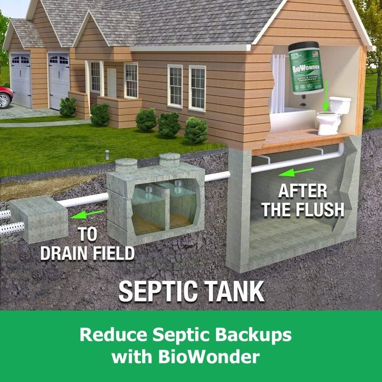

Common Problems & Solutions
Understanding the root causes helps you make informed decisions about repairs and prevention.

Most Common
System Clogs
Clogs are the most frequent septic issue, caused by improper waste disposal and buildup in pipes or the tank.
Common Causes
- Non-biodegradable items (wipes, feminine products)
- Grease and oil buildup from kitchen drains
- Tree root intrusion into pipes
- Excess solid waste accumulation
Solutions
- Professional septic pumping
- Hydro-jetting to clear pipes
- Root removal and barrier installation
- Enzyme treatments for maintenance
Prevention: Proper waste disposal and regular pumping
Drain Field Failure
When the drain field (leach field) fails, wastewater cannot properly absorb into the soil, leading to backups and environmental hazards.
Common Causes
- System overloading from excessive water use
- Compacted soil from vehicles or structures
- Biomat clogging the soil interface
- Aging system beyond 20-25 years
Solutions
- System rest and water use reduction
- Soil aeration and remediation
- Drain field replacement or expansion
- Installation of additional leach lines
Warning Signs: Standing water, odors, lush grass patches
Serious Issue

Inspection Needed
Tank Damage
Physical damage to the septic tank can cause leaks, contamination, and system failure. Older tanks are especially vulnerable.
Common Causes
- Cracks from ground shifting or age
- Corrosion in concrete or steel tanks
- Baffle damage affecting flow separation
- Improper installation or maintenance
Solutions
- Professional inspection and assessment
- Crack sealing or patch repairs
- Baffle replacement or repair
- Tank replacement if severely damaged
Watch for: Wet spots, persistent odors, rapid filling
Tree Root Intrusion
Tree roots naturally seek moisture and nutrients, making your septic system an attractive target. Roots can infiltrate pipes and cause significant damage.
Common Causes
- Trees planted too close to the system
- Small cracks or joints in pipes attracting roots
- Willows, maples, and poplars with aggressive roots
- Old clay or concrete pipes with loose connections
Solutions
- Professional root cutting and removal
- Hydro-jetting to clear root masses
- Root barrier installation
- Pipe replacement with root-resistant materials
Prevention: Plant trees at least 50 feet from system
Preventable